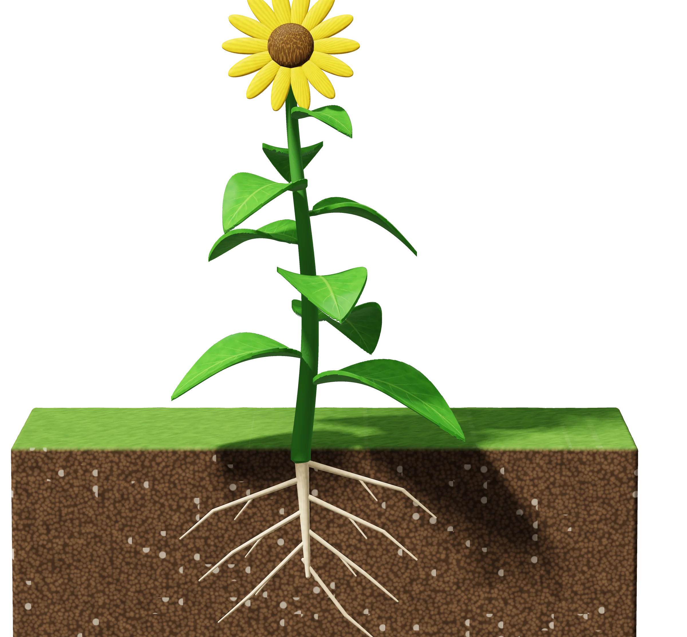
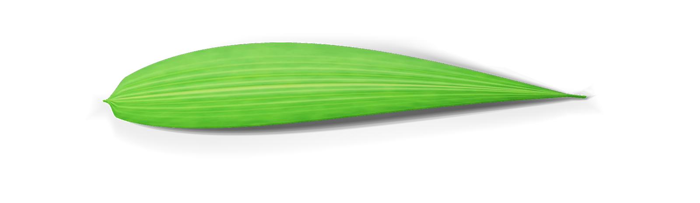
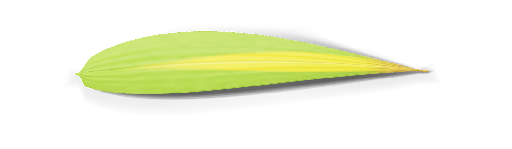
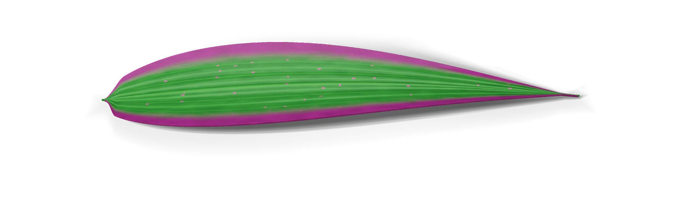
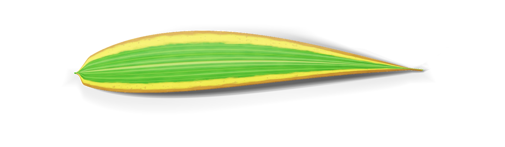
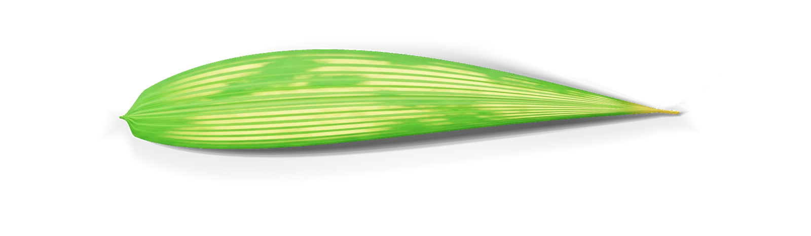
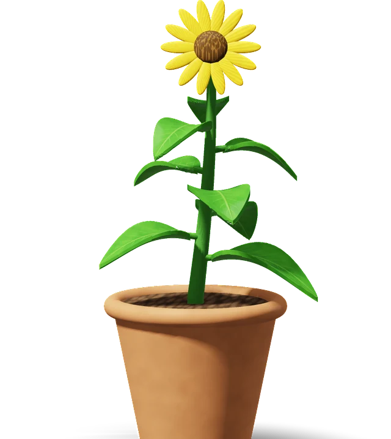
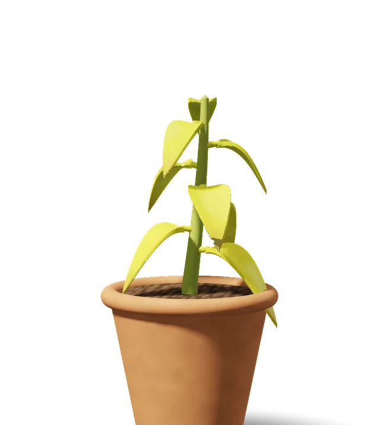
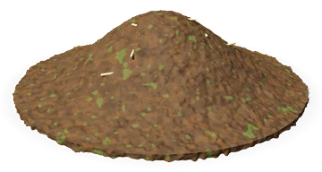
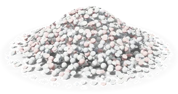

Chapter 4 · Water and Organic CompoundsLesson 4.4 · Grade 7 · MYP Year 3
Deficiency of macroelements in plants
You willlearn the importance of macroelements and fertilizers for plants.
EngageTHINK · PAIR · SHARE
Big question
Why is watering not enough to grow a healthy plant?
Почему одного полива недостаточно, чтобы вырастить здоровое растение?
A plant also needs … because …
Plants also need chemical elements (macroelements such as N, P, K). Without enough of them, the plant has a deficiency.


VocabularyENGLISH · РУССКИЙ · 1 of 2
Words about plant nutrition
deficiency
недостаток
not enough of a needed element
fertilizer
удобрение
a natural or artificial substance added to soil to help plants grow better
macroelement
макроэлемент
an element needed in large amounts (e.g. N, P, K)
organic fertilizer
органическое удобрение
natural: from plant or animal products (manure, compost)
inorganic fertilizer
неорганическое удобрение
synthetic: made in a factory
synthetic
синтетический
made artificially by combining separate elements
Say it: “A deficiency means the plant does not get enough of an element.”
VocabularyENGLISH · РУССКИЙ · 2 of 2 · LEAF WORDS
Words to describe a leaf
vein
жилка
a thin line in a leaf that carries water
edge (margin)
край листа
the outside line of a leaf
tip
кончик листа
the end of the leaf
pale / dark
бледный / тёмный
light colour / deep colour
spots
пятна
small marks of a different colour
ripen
созревать
a fruit becomes ready to eat
Quick check: point to a vein, an edge and the tip on a real leaf.
Explore & ExplainHEALTHY PLANT
A healthy plant
Здоровое растение
Leaves
big, green, many leavesStem and flowers
strong stem, flowersSoil and roots
water and elements from the soilNext: zoom into the soil, then into a leaf.
Explore & ExplainFIGURE 4.4.1 · NUTRIENT DEFICIENCY IN PLANTS
Compare the leaves
Сравни листья
healthy
N
P
K
Mg
Signs can look alike. Look carefully: where does the colour change start — veins, edges or between the veins? Which leaves — old or new?
Explore & ExplainTEXTBOOK p. 63
Fertilizers
Удобрения
Fertilizer — natural or artificial substances added to soil to make plants grow better. Gardeners use fertilizers to prevent deficiencies.

Organic
органические
natural substances: plant or animal excretion products
manure · навозcompost · компостguano

Inorganic
неорганические
synthetic fertilizers; contain one or more nutrients
one-nutrientmulti-nutrient
Quick checkIs compost organic or inorganic?
Organic — it is made from natural plant material.
Explore & ExplainTEXTBOOK p. 63
Inorganic fertilizers
Неорганические удобрения
One-nutrient fertilizers
contain only one type of element
Nammonium sulfateureanitrate
Kpotassium chloride
Psuperphosphate
Multi-nutrient fertilizers
contain several nutrients: nitrogen, potassium, phosphorus, and also trace elements such as boron and manganese
Fact · textbook p. 62
The first fertilizer factory was set up by Sir John Lawes in Britain in 1843. He made superphosphate by dissolving bones in acid.
Think
A plant lacks phosphorus. Which one-nutrient fertilizer could help?
Superphosphate (a phosphorus fertilizer).
Main activityTEXTBOOK ACTIVITY p. 63 · PAIRS
Leaf detectives: match the description
Сопоставь описание листьев с элементом
A · Phosphorus deficiencyB · Magnesium deficiencyC · Nitrogen deficiencyD · Potassium deficiency
1. The old leaves turn brownish-yellow and gradually disappear. Yellowing of the leaves begins with the leaf veins.
2. The colour of the old leaves turns dark green. Brown and pink spots appear on the leaves and then turn into holes.
3. The leaves turn yellow and later dry out at the tips and edges. Brown spots appear on the edges.
4. Pale yellow spots appear between the veins. Large nerves and leaf margins are green. The edge of the leaf is bent and the leaf shape is domed.
I chose ___ because the description says ___.
ApplyPLANT DOCTOR · RESPONSIBLE USE
Plant doctor
Доктор растений
Case 1
A tomato plant has few, small leaves, and its fruits do not ripen. Which element is missing? Which fertilizer could help?
Phosphorus. A phosphorus fertilizer, e.g. superphosphate (or a multi-nutrient fertilizer).
Case 2
A plant has yellow leaves that shrink. It flowers slowly and has few fruits. What is your diagnosis?
Nitrogen deficiency. A nitrogen fertilizer (e.g. ammonium sulfate, nitrate) or an organic fertilizer such as manure or compost.
Discuss · literacy p. 63
What are the problems with overuse of fertilizers? Is “more fertilizer” always better?
No. Too much can harm plants and soil and wash into water. Use the right amount at the right time.
Debatable: To what extent can people meet plants’ needs while using fertilizers responsibly? I think … because ….
Exit ticketWORK ALONE · 3 MINUTES
Exit ticket
Билет на выход: ответь сам
1 · Recall
Name two organic fertilizers.
Any two of: manure, compost, guano.
2 · Understanding
Why is watering not enough to grow a healthy plant?
Plants also need elements such as N, P and K. Without enough of them, the plant has a deficiency: leaves change and growth, fruits or seeds are affected.
3 · Application
A plant’s leaf edges turn yellow, then brown, and the plant is damaged by frost. Which element is missing? Explain.
Potassium (K): edges (and tips) turn yellow and brown, and plants become sensitive to frost and disease.